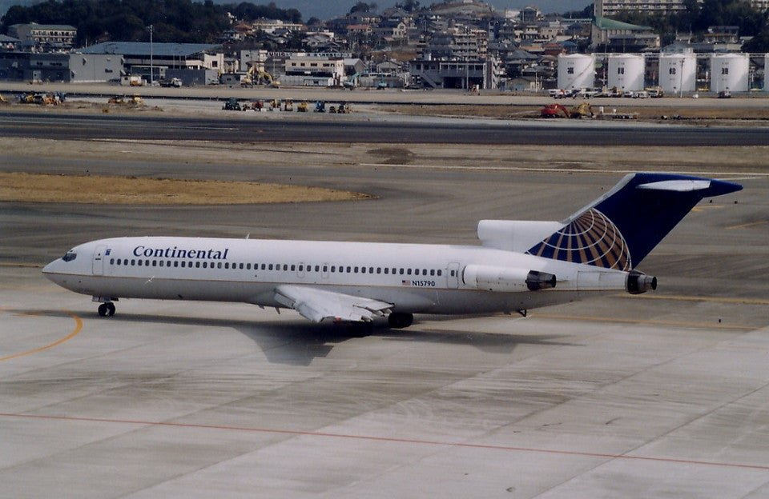
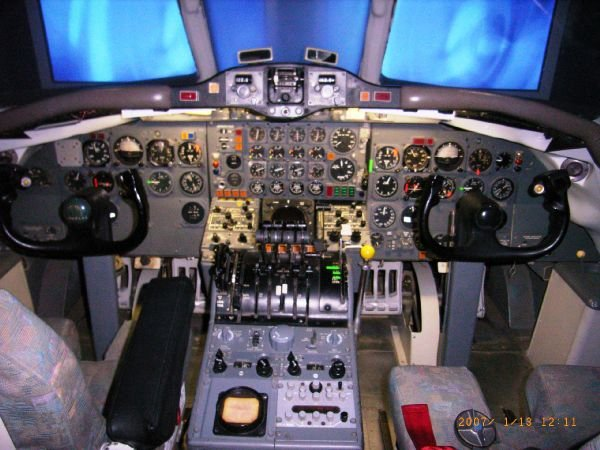

DC-10のコクピットで機長席に座った話。 1994年 パラオダイビングツアーでの出来事。
1994年 正月 パラオに行った帰り
ヤップ島で機内トランジットしていた時だった。

最前列の通路側に ビデオハウジングごと SONYのビデオを持って
撮影指定た俺は 不意にコクピットのドアが開く音に気がつき
そちらを向いた。
白人の機長が出てきて 俺のことを「ヘイボーイ！」と呼んだ・・・。
ボーイじゃねえ！ とっくに40超えとるがな！
何の用かと思いきや 機長が手招きをする。
もしかして！？と思って 後をついて行く。
コクピットに入って良いとのこと。

（向かって左側が機長席）
すかさずビデオを回したらそれを取り上げて
機長席に座れと 言ってきた。
ラッキー！
ハンドルに手を添えて ビデオに向かってピース！
1分も経っていなかったが 機長の帽子まで被せてくれた。
ほんの短い時間では有ったが あの様な貴重な体験は二度と出来ないだろう。
ありがとう機長！ 貴重な経験をありがとう！
でも ビデオは停止ボタンを押され 全く映っていなかった・・・💧
※ この記事はアメブロからの移行記事です（原文はこちら）